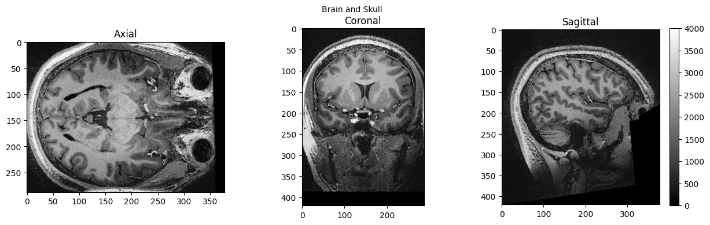
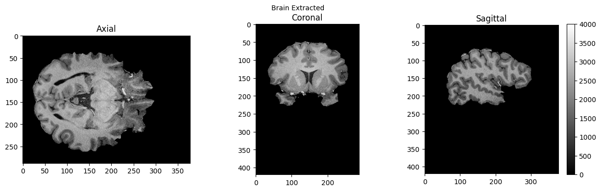

Basic Nipype Example#
Author: Steffen Bollmann
Setup Neurodesk#
import os
import sys
IN_COLAB = 'google.colab' in sys.modules
if IN_COLAB:
os.environ["LD_PRELOAD"] = "";
os.environ["APPTAINER_BINDPATH"] = "/content,/tmp,/cvmfs"
os.environ["MPLCONFIGDIR"] = "/content/matplotlib-mpldir"
os.environ["LMOD_CMD"] = "/usr/share/lmod/lmod/libexec/lmod"
!curl -J -O https://raw.githubusercontent.com/NeuroDesk/neurocommand/main/googlecolab_setup.sh
!chmod +x googlecolab_setup.sh
!./googlecolab_setup.sh
os.environ["MODULEPATH"] = ':'.join(map(str, list(map(lambda x: os.path.join(os.path.abspath('/cvmfs/neurodesk.ardc.edu.au/neurodesk-modules/'), x),os.listdir('/cvmfs/neurodesk.ardc.edu.au/neurodesk-modules/')))))
from google.colab import output
output.enable_custom_widget_manager()
!pip install ipyniivue
# Output CPU information:
!cat /proc/cpuinfo | grep 'vendor' | uniq
!cat /proc/cpuinfo | grep 'model name' | uniq
vendor_id : GenuineIntel
model name : Intel(R) Xeon(R) Platinum 8167M CPU @ 2.00GHz
Demonstrating the module system in Python and Nipype#
# we can use lmod to load fsl in a specific version
import lmod
await lmod.load('fsl/6.0.4')
await lmod.list()
['Lmod',
'Warning:',
'The',
'environment',
'MODULEPATH',
'has',
'been',
'changed',
'in',
'unexpected',
'ways.',
'Lmod',
'is',
'unable',
'to',
'use',
'given',
'MODULEPATH.',
'It',
'is',
'using:',
'"/cvmfs/neurodesk.ardc.edu.au/neurodesk-modules/functional_imaging:/cvmfs/neurodesk.ardc.edu.au/neurodesk-modules/rodent_imaging:/cvmfs/neurodesk.ardc.edu.au/neurodesk-modules/image_registration:/cvmfs/neurodesk.ardc.edu.au/neurodesk-modules/structural_imaging:/cvmfs/neurodesk.ardc.edu.au/neurodesk-modules/image_segmentation:/cvmfs/neurodesk.ardc.edu.au/neurodesk-modules/quantitative_imaging:/cvmfs/neurodesk.ardc.edu.au/neurodesk-modules/workflows:/cvmfs/neurodesk.ardc.edu.au/neurodesk-modules/hippocampus:/cvmfs/neurodesk.ardc.edu.au/neurodesk-modules/image_reconstruction:/cvmfs/neurodesk.ardc.edu.au/neurodesk-modules/data_organisation:/cvmfs/neurodesk.ardc.edu.au/neurodesk-modules/electrophysiology:/cvmfs/neurodesk.ardc.edu.au/neurodesk-modules/phase_processing:/cvmfs/neurodesk.ardc.edu.au/neurodesk-modules/programming:/cvmfs/neurodesk.ardc.edu.au/neurodesk-modules/machine_learning:/cvmfs/neurodesk.ardc.edu.au/neurodesk-modules/diffusion_imaging:/cvmfs/neurodesk.ardc.edu.au/neurodesk-modules/body:/cvmfs/neurodesk.ardc.edu.au/neurodesk-modules/visualization:/cvmfs/neurodesk.ardc.edu.au/neurodesk-modules/spectroscopy:/cvmfs/neurodesk.ardc.edu.au/neurodesk-modules/quality_control:/cvmfs/neurodesk.ardc.edu.au/neurodesk-modules/statistics:/cvmfs/neurodesk.ardc.edu.au/neurodesk-modules/shape_analysis:/cvmfs/neurodesk.ardc.edu.au/neurodesk-modules/spine:/cvmfs/neurodesk.ardc.edu.au/neurodesk-modules/molecular_biology:/cvmfs/neurodesk.ardc.edu.au/neurodesk-modules/bids_apps::".',
'Please',
'use',
'"module',
'use',
'to',
'change',
'MODULEPATH',
'instead.',
'fsl/6.0.4']
from nipype.interfaces.fsl.base import Info
print(Info.version())
# if the FSL version is changed using lmod above, the kernel of the notebook needs to be restarted!
6.0.4:ddd0a010
!bet
Usage: bet <input> <output> [options]
Main bet2 options:
-o generate brain surface outline overlaid onto original image
-m generate binary brain mask
-s generate approximate skull image
-n don't generate segmented brain image output
-f <f> fractional intensity threshold (0->1); default=0.5; smaller values give larger brain outline estimates
-g <g> vertical gradient in fractional intensity threshold (-1->1); default=0; positive values give larger brain outline at bottom, smaller at top
-r <r> head radius (mm not voxels); initial surface sphere is set to half of this
-c <x y z> centre-of-gravity (voxels not mm) of initial mesh surface.
-t apply thresholding to segmented brain image and mask
-e generates brain surface as mesh in .vtk format
Variations on default bet2 functionality (mutually exclusive options):
(default) just run bet2
-R robust brain centre estimation (iterates BET several times)
-S eye & optic nerve cleanup (can be useful in SIENA - disables -o option)
-B bias field & neck cleanup (can be useful in SIENA)
-Z improve BET if FOV is very small in Z (by temporarily padding end slices)
-F apply to 4D FMRI data (uses -f 0.3 and dilates brain mask slightly)
-A run bet2 and then betsurf to get additional skull and scalp surfaces (includes registrations)
-A2 <T2> as with -A, when also feeding in non-brain-extracted T2 (includes registrations)
Miscellaneous options:
-v verbose (switch on diagnostic messages)
-h display this help, then exits
-d debug (don't delete temporary intermediate images)
Load afni as well#
await lmod.load('afni/22.3.06')
await lmod.list()
Lmod Warning: The environment MODULEPATH has been changed in unexpected ways.
Lmod is unable to use given MODULEPATH. It is using:
"/cvmfs/neurodesk.ardc.edu.au/neurodesk-modules/functional_imaging:/cvmfs/neurodesk.ardc.edu.au/neurodesk-modules/rodent_imaging:/cvmfs/neurodesk.ardc.edu.au/neurodesk-modules/image_registration:/cvmfs/neurodesk.ardc.edu.au/neurodesk-modules/structural_imaging:/cvmfs/neurodesk.ardc.edu.au/neurodesk-modules/image_segmentation:/cvmfs/neurodesk.ardc.edu.au/neurodesk-modules/quantitative_imaging:/cvmfs/neurodesk.ardc.edu.au/neurodesk-modules/workflows:/cvmfs/neurodesk.ardc.edu.au/neurodesk-modules/hippocampus:/cvmfs/neurodesk.ardc.edu.au/neurodesk-modules/image_reconstruction:/cvmfs/neurodesk.ardc.edu.au/neurodesk-modules/data_organisation:/cvmfs/neurodesk.ardc.edu.au/neurodesk-modules/electrophysiology:/cvmfs/neurodesk.ardc.edu.au/neurodesk-modules/phase_processing:/cvmfs/neurodesk.ardc.edu.au/neurodesk-modules/programming:/cvmfs/neurodesk.ardc.edu.au/neurodesk-modules/machine_learning:/cvmfs/neurodesk.ardc.edu.au/neurodesk-modules/diffusion_imaging:/cvmfs/neurodesk.ardc.edu.au/neurodesk-modules/body:/cvmfs/neurodesk.ardc.edu.au/neurodesk-modules/visualization:/cvmfs/neurodesk.ardc.edu.au/neurodesk-modules/spectroscopy:/cvmfs/neurodesk.ardc.edu.au/neurodesk-modules/quality_control:/cvmfs/neurodesk.ardc.edu.au/neurodesk-modules/statistics:/cvmfs/neurodesk.ardc.edu.au/neurodesk-modules/shape_analysis:/cvmfs/neurodesk.ardc.edu.au/neurodesk-modules/spine:/cvmfs/neurodesk.ardc.edu.au/neurodesk-modules/molecular_biology:/cvmfs/neurodesk.ardc.edu.au/neurodesk-modules/bids_apps::".
Please use "module use ..." to change MODULEPATH instead.
['Lmod',
'Warning:',
'The',
'environment',
'MODULEPATH',
'has',
'been',
'changed',
'in',
'unexpected',
'ways.',
'Lmod',
'is',
'unable',
'to',
'use',
'given',
'MODULEPATH.',
'It',
'is',
'using:',
'"/cvmfs/neurodesk.ardc.edu.au/neurodesk-modules/functional_imaging:/cvmfs/neurodesk.ardc.edu.au/neurodesk-modules/rodent_imaging:/cvmfs/neurodesk.ardc.edu.au/neurodesk-modules/image_registration:/cvmfs/neurodesk.ardc.edu.au/neurodesk-modules/structural_imaging:/cvmfs/neurodesk.ardc.edu.au/neurodesk-modules/image_segmentation:/cvmfs/neurodesk.ardc.edu.au/neurodesk-modules/quantitative_imaging:/cvmfs/neurodesk.ardc.edu.au/neurodesk-modules/workflows:/cvmfs/neurodesk.ardc.edu.au/neurodesk-modules/hippocampus:/cvmfs/neurodesk.ardc.edu.au/neurodesk-modules/image_reconstruction:/cvmfs/neurodesk.ardc.edu.au/neurodesk-modules/data_organisation:/cvmfs/neurodesk.ardc.edu.au/neurodesk-modules/electrophysiology:/cvmfs/neurodesk.ardc.edu.au/neurodesk-modules/phase_processing:/cvmfs/neurodesk.ardc.edu.au/neurodesk-modules/programming:/cvmfs/neurodesk.ardc.edu.au/neurodesk-modules/machine_learning:/cvmfs/neurodesk.ardc.edu.au/neurodesk-modules/diffusion_imaging:/cvmfs/neurodesk.ardc.edu.au/neurodesk-modules/body:/cvmfs/neurodesk.ardc.edu.au/neurodesk-modules/visualization:/cvmfs/neurodesk.ardc.edu.au/neurodesk-modules/spectroscopy:/cvmfs/neurodesk.ardc.edu.au/neurodesk-modules/quality_control:/cvmfs/neurodesk.ardc.edu.au/neurodesk-modules/statistics:/cvmfs/neurodesk.ardc.edu.au/neurodesk-modules/shape_analysis:/cvmfs/neurodesk.ardc.edu.au/neurodesk-modules/spine:/cvmfs/neurodesk.ardc.edu.au/neurodesk-modules/molecular_biology:/cvmfs/neurodesk.ardc.edu.au/neurodesk-modules/bids_apps::".',
'Please',
'use',
'"module',
'use',
'to',
'change',
'MODULEPATH',
'instead.',
'fsl/6.0.4',
'afni/22.3.06']
download test data#
![ -f ./sub-01_ses-01_7T_T1w_defaced.nii ] && echo "$FILE exist." || wget https://objectstorage.us-ashburn-1.oraclecloud.com/n/idrvm4tkz2a8/b/TOMCAT/o/TOMCAT_DIB/sub-01/ses-01_7T/anat/sub-01_ses-01_7T_T1w_defaced.nii.gz -O ./sub-01_ses-01_7T_T1w_defaced.nii.gz
![ -f ./sub-01_ses-01_7T_T1w_defaced.nii ] && echo "$FILE exist." || gunzip ./sub-01_ses-01_7T_T1w_defaced.nii.gz
--2023-07-10 07:36:35-- https://objectstorage.us-ashburn-1.oraclecloud.com/n/idrvm4tkz2a8/b/TOMCAT/o/TOMCAT_DIB/sub-01/ses-01_7T/anat/sub-01_ses-01_7T_T1w_defaced.nii.gz
Resolving objectstorage.us-ashburn-1.oraclecloud.com (objectstorage.us-ashburn-1.oraclecloud.com)... 134.70.32.1, 134.70.24.1, 134.70.28.1
Connecting to objectstorage.us-ashburn-1.oraclecloud.com (objectstorage.us-ashburn-1.oraclecloud.com)|134.70.32.1|:443...
connected.
HTTP request sent, awaiting response...
200 OK
Length: 72682635 (69M) [application/octet-stream]
Saving to: ‘./sub-01_ses-01_7T_T1w_defaced.nii.gz’
./sub-01_ 0%[ ] 0 --.-KB/s
./sub-01_s 0%[ ] 119.17K 497KB/s
./sub-01_se 1%[ ] 920.00K 1.83MB/s
./sub-01_ses 6%[> ] 4.46M 6.12MB/s
./sub-01_ses- 16%[==> ] 11.37M 12.2MB/s
./sub-01_ses-0 26%[====> ] 18.12M 16.0MB/s
./sub-01_ses-01 35%[======> ] 24.37M 18.3MB/s
./sub-01_ses-01_ 43%[=======> ] 30.48M 19.9MB/s
./sub-01_ses-01_7 52%[=========> ] 36.52M 21.1MB/s
./sub-01_ses-01_7T 61%[===========> ] 42.52M 21.6MB/s
./sub-01_ses-01_7T_ 70%[=============> ] 48.59M 22.4MB/s
/sub-01_ses-01_7T_T 79%[==============> ] 54.77M 23.1MB/s
sub-01_ses-01_7T_T1 87%[================> ] 60.77M 23.5MB/s
ub-01_ses-01_7T_T1w 96%[==================> ] 66.82M 23.9MB/s
./sub-01_ses-01_7T_ 100%[===================>] 69.32M 24.6MB/s in 2.8s
2023-07-10 07:36:38 (24.6 MB/s) - ‘./sub-01_ses-01_7T_T1w_defaced.nii.gz’ saved [72682635/72682635]
!ls
sub-01_ses-01_7T_T1w_defaced.nii
run nipype pipeline#
%%capture
!pip install nipype
from nipype.interfaces import fsl
from nipype.interfaces import afni
btr = fsl.BET()
btr.inputs.in_file = './sub-01_ses-01_7T_T1w_defaced.nii'
btr.inputs.frac = 0.4
btr.inputs.out_file = './sub-01_ses-01_7T_T1w_defaced_brain.nii'
res = btr.run()
edge3 = afni.Edge3()
edge3.inputs.in_file = './sub-01_ses-01_7T_T1w_defaced.nii'
edge3.inputs.out_file = './sub-01_ses-01_7T_T1w_defaced_edges.nii'
edge3.inputs.datum = 'byte'
res = edge3.run()
230710-07:36:42,707 nipype.interface WARNING:
FSLOUTPUTTYPE environment variable is not set. Setting FSLOUTPUTTYPE=NIFTI
230710-07:36:54,693 nipype.interface INFO:
stderr 2023-07-10T07:36:54.693312:++ 3dedge3: AFNI version=AFNI_22.3.06 (Nov 15 2022) [64-bit]
230710-07:36:54,698 nipype.interface INFO:
stderr 2023-07-10T07:36:54.698069:** AFNI converts NIFTI_datatype=4 (INT16) in file /tmp/tmpwyw4nal3/sub-01_ses-01_7T_T1w_defaced.nii to FLOAT32
230710-07:36:54,698 nipype.interface INFO:
stderr 2023-07-10T07:36:54.698069: Warnings of this type will be muted for this session.
230710-07:36:54,699 nipype.interface INFO:
stderr 2023-07-10T07:36:54.698069: Set AFNI_NIFTI_TYPE_WARN to YES to see them all, NO to see none.
230710-07:36:54,701 nipype.interface INFO:
stderr 2023-07-10T07:36:54.701831:*+ WARNING: If you are performing spatial transformations on an oblique dset,
230710-07:36:54,703 nipype.interface INFO:
stderr 2023-07-10T07:36:54.701831: such as /tmp/tmpwyw4nal3/sub-01_ses-01_7T_T1w_defaced.nii,
230710-07:36:54,703 nipype.interface INFO:
stderr 2023-07-10T07:36:54.701831: or viewing/combining it with volumes of differing obliquity,
230710-07:36:54,704 nipype.interface INFO:
stderr 2023-07-10T07:36:54.701831: you should consider running:
230710-07:36:54,705 nipype.interface INFO:
stderr 2023-07-10T07:36:54.701831: 3dWarp -deoblique
230710-07:36:54,705 nipype.interface INFO:
stderr 2023-07-10T07:36:54.701831: on this and other oblique datasets in the same session.
230710-07:36:54,706 nipype.interface INFO:
stderr 2023-07-10T07:36:54.701831: See 3dWarp -help for details.
230710-07:36:54,707 nipype.interface INFO:
stderr 2023-07-10T07:36:54.707367:++ Oblique dataset:/tmp/tmpwyw4nal3/sub-01_ses-01_7T_T1w_defaced.nii is 1.253358 degrees from plumb.
!ls
sub-01_ses-01_7T_T1w_defaced.nii
sub-01_ses-01_7T_T1w_defaced_brain.nii.gz
sub-01_ses-01_7T_T1w_defaced_edges.nii
# View 3D data
import matplotlib.pyplot as plt
def view_slices_3d(image_3d, slice_nbr, vmin, vmax, title=''):
# print('Matrix size: {}'.format(image_3d.shape))
fig = plt.figure(figsize=(15, 4))
plt.suptitle(title, fontsize=10)
plt.subplot(131)
plt.imshow(np.take(image_3d, slice_nbr, 2), vmin=vmin, vmax=vmax, cmap='gray')
plt.title('Axial');
plt.subplot(132)
image_rot = ndimage.rotate(np.take(image_3d, slice_nbr, 1),90)
plt.imshow(image_rot, vmin=vmin, vmax=vmax, cmap='gray')
plt.title('Coronal');
plt.subplot(133)
image_rot = ndimage.rotate(np.take(image_3d, slice_nbr, 0),90)
plt.imshow(image_rot, vmin=vmin, vmax=vmax, cmap='gray')
plt.title('Sagittal');
cbar=plt.colorbar()
def get_figure():
"""
Returns figure and axis objects to plot on.
"""
fig, ax = plt.subplots(1)
plt.tick_params(top=False, right=False, which='both')
ax.spines['top'].set_visible(False)
ax.spines['right'].set_visible(False)
return fig, ax
import nibabel as nib
from matplotlib import transforms
from scipy import ndimage
import numpy as np
# load data
brain_full = nib.load('./sub-01_ses-01_7T_T1w_defaced.nii').get_fdata()
brain = nib.load('./sub-01_ses-01_7T_T1w_defaced_brain.nii.gz').get_fdata()
edges = nib.load('./sub-01_ses-01_7T_T1w_defaced_edges.nii').get_fdata()
view_slices_3d(brain_full, slice_nbr=230, vmin=0, vmax=4000, title='Brain and Skull')
view_slices_3d(brain, slice_nbr=230, vmin=0, vmax=4000, title='Brain Extracted')
view_slices_3d(edges, slice_nbr=230, vmin=0, vmax=1000, title='Edges')



import ipyniivue
nv = ipyniivue.Niivue(crosshair_color=[0,1,0,1])
nv.add_volume('./sub-01_ses-01_7T_T1w_defaced_brain.nii.gz')
nv